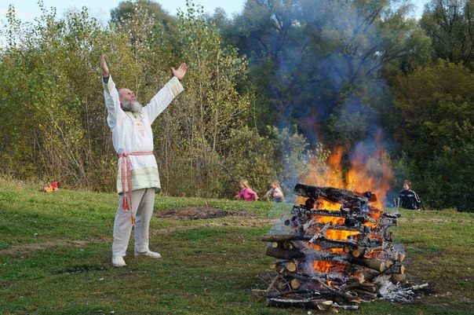
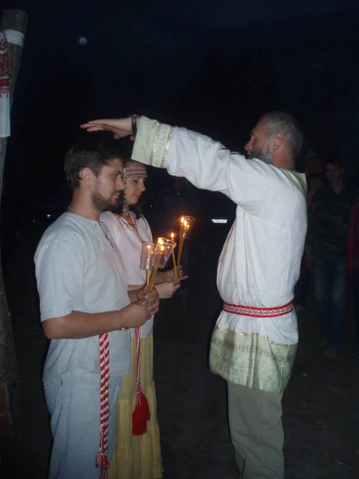
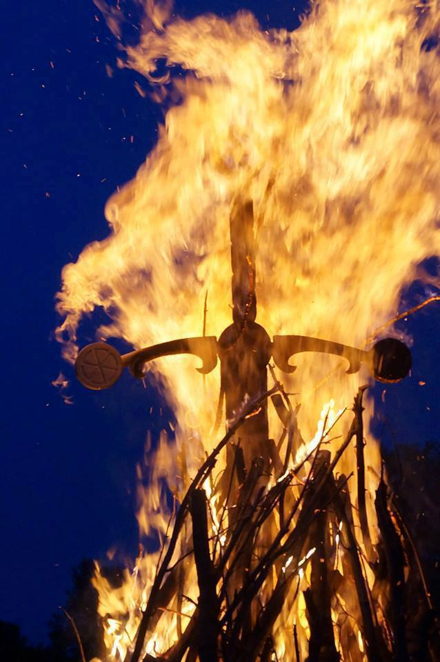

Russische Vedische Praxis der Heilung

Russischer Wahrsager aus Altai Volksgesundbeter der vedischen Abstammung- ursprünge vom Vorfahrenerbe- Panjkov Oleg Gennadjevitsch möchte für alle Willigen die Einzeltreffen und heilkräftige, gesundheitsfördernde Behandlungen «Vedische Abstammungsglückseligkeit » durchführen. Dazu gehören Befreiung der Seele, der Aura, der Energiefelder und der Wirbel, Restitution der untrennbaren Einheit mit der Abstammung, der Vorfahren durch Energiezentren „Harie-Hara“.
Im Genesungsprozess entstehen:
- Ausschaltung der Energieblöcke, die die richtige Abstammungswahrnehmung der Welt belasten.
- Restitution vom Hexadezimalsystem der Wahrnehmung, der Familien- und Abstammungsbeziehungen durch Befreiung der Seele, der Aura und ihre Korrektion.
- Energiefelderabgleich in dreiHöhenlagen: Geist, Seele und Leib.
- Erlangung der Abstammungskraft und Enthüllung der Erinnerungen durch geistige, seelische, leibliche und moralische Abstammungsursprünge.
- Restitution der Abstammungsbeziehungen und des Bewusstseins mit denUrgroßeltern – Göttern.
- Befreiung des Bewusstseins, Abstammungskanalanschluß durch Abstammungsenergiekanäle, von Männer und Frauenanbeginn
- Restitution der Einheit von Gegensätzen, das heißt Restitution der Harmonie von Männer und Frauenanbeginn
- Kinderwunschbehandlung
Nach den Ergebnissen von gesundheitsfördernden Behandlungen wird psychologischer Zustand des Menschen viel besser, verklingt die Depression; der Mensch fängt sich wieder und seine geistige Entwicklung stellt sich ein und die Hauptsache – der Mensch versteht seinen Platz im Leben, findet den Sinn und das Ziel im Leben und der beginnt sein Leben, seine Abstammung und seine Familie zu schätzen.
Die gewünschte Menge von Behandlungen ist mindestens 3. Es wird Einzelfallhilfe geleistet, Ursache-Wirkungs-Zusammenhänge werden geforscht, die Antworten auf die Fragen werden gegeben und die Empfehlungen werden angeboten, wie man sich energisch, leiblich, seelisch und geistig frisch und gesund erhalten kann.
Interessenten für diese Behandlungen bekommen die Möglichkeit Kenntnisse im Bereich der vedischen Familienkultur, Abstammungskultur und des Vorfahrenerbes zu erwerben. Diese Behandlungsseminare geben die Direktion für die Gesundheitsförderung. Der Mensch kann selbst Abstammung-Göttliche Energie herstellen lernen, diese Energie halten lernen, und nur dann kann sie schenken, vermitteln, abgeben.
Am Ende dieses heilkräftigen Programms «Vedische Abstammungsglückseligkeit» befestigt jeder Teilnehmer seine Ergebnisse im weiterführenden geistlichen Selbststudium.
Jeder bekommt persönlich die Empfehlungen für das Selbststudium- sogenannte «Hausaufgabe» für Befestigung der Auswirkung vom heilkräftigen Programm.
Nur durch gemeinsame Anstrengungen des Heilpraktikers und der Interessenten für diese Behandlung ist der festige positive Befund möglich, statt momentaner Erleichterung. Während der Heilpraktik hilft man jedem Menschen den Urgrund des Problems oder der Krankheit verstehen und beseitigen und dann im Prozess der Aufbesserung oder der Genesung kann jeder solche Möglichkeit haben, sich als richtiger „Magier und Hexenmeister“ zu fühlen.
Streben Sie nach der Vollkommenheit der Harmonie von der Dreieinigkeit- Geist, Seele und Leib! Bleiben Sie gesund, munter, glücklich, erfolgreich, lieben Sie und bleiben geliebt!

Die Korrektur des Energiemittelpunkts «Zolotnik-Nabel»
Hara-Charakter- Zolotnik, der Mittelpunkt von der Nabelenergie des Menschen. Geistig-seelische Beanspruchung (Depression, Verzweifeltsein, grundlose pathogene Erlebnisse, öftere Umstimmungen, Willenskraftmangel, Charakterstärkemangel). Viele energische, leibliche, seelische und geistige Gesundheitsprobleme hängen mit Energiemittelpunkt-Nabel-Läsion zusammen. Im Volksmund nennt man diesen Energiemittelpunkt einfach «Nabel». Von lange her haben viele Leute um den Nabel gesorgt.
Wenn man sagt, dass «der Nabel am falschen Platz ist », entstehen viele Krankheiten. Zum Beispiel, Herzerkrankungen. Alle wissen, dass das Herz seinen eigenen Rhythmus hat, aber viele verstehen nicht, dass der Nabel auch seinen eigenen Rhythmus hat. Wenn sich der Nabel zur Seite, zum Herzen verschiebt, entsteht die Rhythmusstörung, das ist die Herzarrhythmie-Herzrhythmusstörung. Der Nabel kann auch seinen Platz herum «spazierengehen» und den anderen Organen stören. Die schwere Magenkrankheit – das ist der Grund für den falschen Nabelplatz. Wenn sich der Nabel nach unten verschiebt, entstehen schwere wandernde Beschwerden im Unterbauch. Der erste Grund dafür ist der Leistenbruch. Man erwirbt den Bruch aus „Weiterreißlastgründen“, sie können im Bauch „steckenbleiben“. Die Gründe dafür können verschieden sein- Kraftleistung und Überbelastung, oder wenn man vom rechten, geistigen Plan, Wege abging, d.h. « eine Last auf sich nehmen». Seit alten Zeitenschenkt man eine große Aufmerksamkeit der Behandlung, dem Besprechen vom Bruch des Säuglings. Es ist wichtig rechtzeitig dieser Krankheit zu begegnen.
Die Korrektur dieses wichtigen Energiemittelpunkts ist möglich mit Hilfe von der altrussischen Massage, die die alte Methodik der Gesundbeterei hat. (Der Gesundbeter ist der Heilkundige, der die Besonderheiten vom Mittelpunkt der Nabelenergie kennt) .
Diese Prozedur führt der russische Wahrsager, Volksgesundbeter der vedischen Abstammungsursprünge vom Vorfahrenerbe- Panjkov Oleg Gennadjevitsch durch.

Die Wachstherapie
Die alte Methode vom Gesundbeter – die Wachsausgießung kann die Aura, das Mentalfeld des Menschen von den Astralleibern abnehmen. Diese Methodik ist sehr populär und pflanzt sich traditionell in der Volksmedizin fort. Die Wachskraft ist mit ihrer ergebnisreichen Therapie längst bekannt- Befreiung von der Erschrockenheit, Beunruhigung, Angststörung; vom Stottern, von den negativen äußeren Einflüssen.
Melden Sie sich und schicken Sie Ihre Vorschläge an die E-Mail-Adresse: